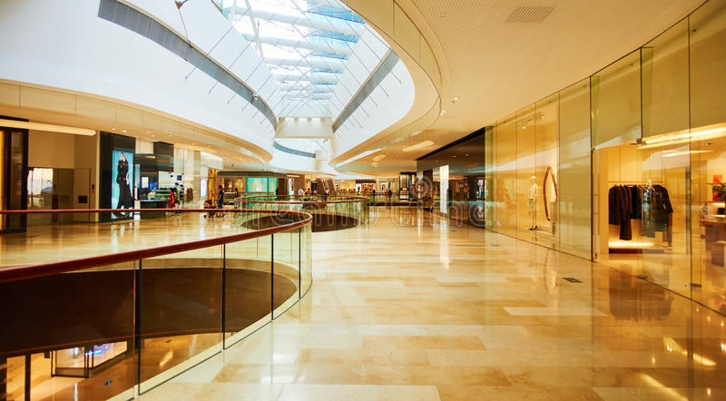

About
Mall of the South is located in one of the wealthiest suburbs in the south of Jo’burg, particularly Pine city Hills, which attracts the affluent resident with a taste for luxury brands.
The 72 000 m² regional shopping centre is a retail
market leader in mall innovation with an offering
of over 160+ fabulous stores, free Wi-Fi and great
visibility from two main arterial roads,
namely Kliprivier Drive and Swartkoppies Road.
About Pinecity
Pine city Facade
Pine cityoffers a high-end modern shopping experience
where shoppers can enjoy an exciting tenant mix including all
the major banks, anchor tenants Checkers, Woolworths, Pick ‘n Pay,
Edgars, Game , Dischem, Clicks and more.
With notable aesthetic features such as fountains, indoor trees and
greenery, the mall is easy on the eye and provides shoppers with an
open and refreshing atmosphere.
